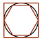

Accueil
Seconde
Première
Terminale
Animations
Archive
Première
Cours de la classe de première
Chapitre 1 : Fonctions de référence
Chapitre 2 : Probabilités conditionnelles
Chapitre 3 : Équations et inéquations du second degré
Chapitre 4 : Trigonométrie
Chapitre 5 : Suites numériques
Chapitre 6 : Dérivation
Chapitre 7 : Produit scalaire
Chapitre 8 : Application de la dérivation
Chapitre 9 : Variables aléatoires réelles
Chapitre 10 : Fonction exponentielle
Chapitre 11 : Configurations géométriques
Chapitre 12 : Fonctions trigonométriques
Outils
Calculatrice
Geogebra
Console Python
Notebook Python
Calculatrice : mode examen
Casio
Texas Instrument
Numworks
Liens
Quand je passe le bac
Horizon 21